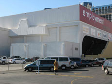

|
SHEDDING DETAILS
Gerhard Friedl und Laura Horelli | USA/GER 2009 | 25 min.
Material: DV
Format: Beta SP
Original language: English, Serbocroatic
Script: Gerhard Friedl
Camera: Laura Horelli
Sound: Laura Horelli
Editing: Gerhard Friedl, Laura Horelli
With Slavica Trikolic, Jerosima Tanakovic, Dejan Jerosima
Production: Gerhard Friedl, Laura Horelli mit Villa Aurora, Los Angeles
Print/Sales: Laura Horelli
A single room, a few chambermaids from ex-Yugoslavia, a translator, an investigation. Like in a detective story slowly but surely a precise picture of the enormous pressure, the employees of the illustrious Ceasar’s Palace in Las Vegas are submitted to. "It’s a film about the linguistic description of work, a film about the necessity of a discussion in a moment of crisis and a film about the circumstances of it’s production." (Gerhard Friedl/Laura Horelli)
Gerhard Friedl, born in 1967 in Bad Ausee, Austria. 1986-91 he studies Philosophy in Vienna followed by film studies at the Munich Academy for Film and Television (HFF). He works as film and photo critic, organizes film series and was occupied on several film projects. In 2003 he teaches temporary documentary film making in Berlin. He dies on July 2nd 2009 at the age of 41.
Films: MdW 1991 | M 1993 | Training 1994 | Knittelfeld – Stadt ohne Geschichte 1997 | Hat Wolff von Amerongen Konkursdelikte bagangen? 2004 | Shedding Details (zusammen mit Laura Horelli) 2009
Laura Horelli, born in 1976 in Helsinki, Finnland. She studies in Helsinki and at the Städelschule in Frankfurt. In 2005 she was part of the Nordisk Pavillon at the Biennale in Venice. She has received numerous scholarships and grants and participated in group exhibitions worldwide. She lives and works as visual artist in Berlin.
Exhibitions (selection): 49. Biennale Venedig 2001 | Berlin North, Hamburger Bahnhof 2004 | Schrumpfende Städte, Kunst Werke Berlin 2004 | Lido, Kunsthalle Düsseldorf 2005 | 51. Biennale Venedig 2005 | Reports and Diaries, Galerie Ilka Bree, Bordeaux 2006 | Street: behind the cliché, Witte de With, Rotterdam 2006 | Einzelausstellung Galerie Barbara Weiss, Berlin 2007 | Melting Ice, Palais des Beaux-Arts, Brüssel 2008 | Vertrautes Terrain – Aktuelle Kunst in und über Deutschland, ZKM Karlsruhe 2008 | 53. Biennale Venedig 2009
Films: Shedding Details (zusammen mit Gerhard Friedl) 2009
back
|